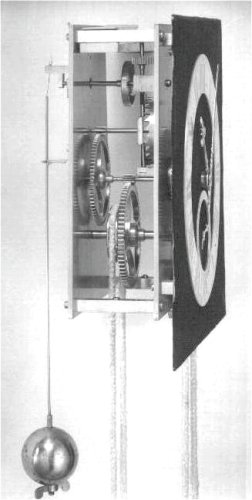
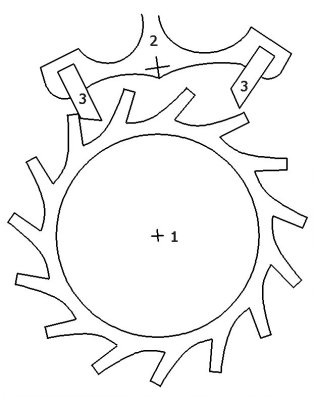
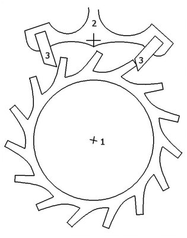
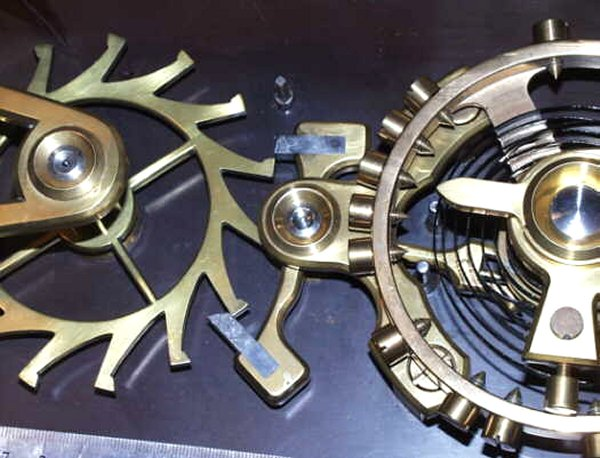
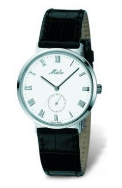
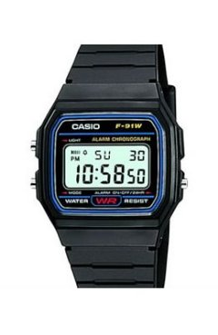

Provocarea 1B5−1
Provocarea 1B5−1
Oare cum ar putea fi transferată unui pendul energia eliberată prin căderea unui corp, în "porţii" infime şi la momente favorabile, pentru a întreţine oscilaţiile pendulului?
B.5. |
Oscilaţii autoîntreţinute |
Întreţinerea oscilaţiilor unui pendul necesită un cost energetic extrem de redus: căderea cu un metru a unui corp cu masa un kilogram ar putea menţine în oscilaţie un mic pendul chiar şi o săptămână!
Provocarea 1B5−1
Oare cum ar putea fi transferată unui pendul energia eliberată prin căderea unui corp, în "porţii" infime şi la momente favorabile, pentru a întreţine oscilaţiile pendulului?
Rezolvarea acestei probleme a condus la una dintre cele mai importante realizări: ceasul! Primul ceas care avea o precizie acceptabilă a fost realizat, în 1656, de către olandezul Chrisiaan Huygens (figura 1B5−1).
|  | Fig. 1B5-1. O reconstrucţie a ceasului realizat de Christiaan Huygens. |
Acest ceas putea funcţiona câteva ore, cu o eroare de o secundă la aproximativ trei ore de funcţionare (adică o eroare relativă de 0,01%), ceea ce era remarcabil pentru acea vreme!
Ceasul utiliza un pendul ale cărui oscilaţii erau întreţinute prin căderea controlată a unui corp. Întreţinerea oscilaţiilor se făcea automat, pendulul însuşi comandând transferul de energie eliberată prin căderea corpului!
 Numim oscilaţii autoîntreţinute oscilaţiile unui sistem care controlează el însuşi transferul de energie care îi întreţine oscilaţiile.
Numim oscilaţii autoîntreţinute oscilaţiile unui sistem care controlează el însuşi transferul de energie care îi întreţine oscilaţiile.
Autoîntreţinerea oscilaţiilor era posibilă prin intermediul unui mecanism foarte ingenios, prezentat schematic în figura 1B5−2.
|  | Fig. 1B5-2. Reprezentarea schematică a mecanismului utilizat de Huygens pentru autoîntreţinerea oscilaţiilor. |
Pe axul roţii (1) din figura 1B5−2 era înfăşurat un fir la capătul căruia era atârnat un corp masiv, astfel încât, prin căderea corpului, roata să fie antrenată în mişcare de rotaţie în sensul acelor de ceasornic. Dacă nimic nu ar fi intervenit, firul s−ar fi desfăşurat în câteva secunde, punând roata în mişcare rapidă de rotaţie.
Aici intervine rolul esenţial al piesei (2) din figura 1B5−2, numit ancoră. Proeminenţele (3) ale ancorei, intercalându−se între dinţii roţii (1), o pot bloca.
Ancora este solidar legată cu pendulul ceasului. În timpul oscilaţiilor pendulului, ancora însăşi era pusă în mişcare, când într−o parte, când în cealaltă.
Formele dinţilor roţilor (1) şi ale proeminenţelor (3) ale ancorei erau astfel alese încât, către sfârşitul unei curse a pendulului (la elongaţie aproape maximă), pentru foarte scurt timp, roata dinţată să fie lăsată să se rotească (trasă fiind de corpul de la capătul firului).
Profilul înclinat al proeminenţelor (3) face ca pendulul să fie "propulsat", prin împingerea roţii asupra uneia sau alteia dintre proeminenţe (figura 1B5−3).
|  | Fig. 1B5-3. La capătul fiecărei curse a pendulului, ancora eliberează pentru scurt timp roata dinţată şi pendulul este propulsat. |
Urmăreşte o reprezentare animată a funcţionării mecanismului cu ancoră!
Astfel, la fiecare oscilaţie, pendulului i se transferă o cantitate mică de energie (provenită de la căderea corpului), suficientă pentru a−i întreţine oscilaţiile!
Prin reglarea şurubului care susţinea bila pendulului, putea fi modificată perioada de oscilaţie a acestuia (prin modificarea lungimii sale). Precizia oferită de ceasul lui Huygens a facut posibilă, pentru prima dată, adăugarea acelor care să indice minutele şi secundele (până atunci, ceasurile mecanice aveau doar acul orar!).
De atunci, ceasurile mecanice au fost continuu perfecţionate − acestea au devenit extraordinar de precise (erori de ordinul secundei, pe durata câtorva ani, adică 0,000001%) şi foarte compacte (pot fi purtate cu uşurinţă la încheietura mâinii).
Pendulul gravitaţional a fost înlocuit cu un balansier − un pendul elastic cu resort în spirală, având o mişcare oscilatorie de rotaţie (figura 1B5−4).

Fig. 1B5-4. Balansierul şi ancora unui ceas mecanic perfecţionat.
Energia pentru compensarea amortizării provine de la un resort în spirală, tensionat cu ajutorul unei cheiţe (o dată la 24 de ore, sau chiar mai rar). Unele ceasuri mecanice (numite automatice) au un sistem ingenios care extrage energia necesară întreţinerii oscilaţiilor de la chiar mişcările accelerate la care sunt supuse inevitabil în timpul purtării lor la mână. Aceasta este posibil pentru că este nevoie de atât de puţină energie pentru a întreţine oscilaţiile unui balansier!
Astăzi ne este însă mult mai uşor să controlăm oscilaţiile electronilor (incredibil de puţin masivi, în comparaţie cu cel mai mic balansier). Astfel, utilizăm pe scară largă ceasurile electronice, foarte ieftine şi foarte precise (figura 1B5−5).
a. b.
Fig. 1B5-5. Ceasuri electronice: a. cu afişaj analogic (cu ace); b. cu afişaj digital (cu cifre).
Acestea îşi extrag energia necesară întreţinerii oscilaţiilor electronilor din reacţiile chimice care se desfăşoară într−o mică baterie electrică. O baterie minusculă, cât un nasture mic, poate asigura funcţionarea continuă a unui astfel de ceas pe perioade de câţiva ani!